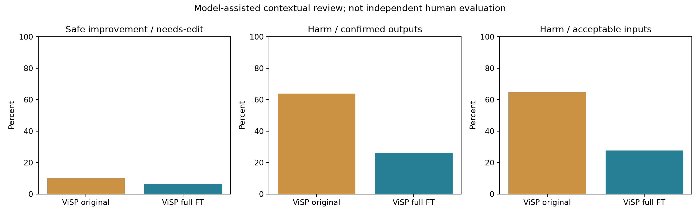

Đánh giá theo hướng JFLEG/SEEDA
Đã chấm 300 phiếu mức câu và 515 edit bằng mô hình. Đây không phải đánh giá người độc lập hoặc benchmark gốc. Fine-tune giảm harm theo rubric này nhưng cải thiện an toàn vẫn thấp.
| Hệ thống | Cải thiện an toàn / input cần sửa | Harm / output đủ điều kiện | Clean harm / input chấp nhận được | Win / tie / loss so với input | Uncertain |
|---|
| visp_base | 3/30 = 10.00% | 95/149 = 63.76% | 77/119 = 64.71% | 4 / 43 / 102 | 1 |
| visp_full | 2/31 = 6.45% | 39/150 = 26.00% | 33/119 = 27.73% | 2 / 108 / 40 | 0 |
| Hệ thống | Có thay đổi ngữ nghĩa bị đánh giá gây hại | Chỉ đổi dấu câu/thoại gây hại | Lỗi từ/cấu trúc nhưng không đổi nghĩa rõ |
|---|
| visp_base | 77 | 9 | 9 |
| visp_full | 10 | 25 | 4 |
| Hệ thống | Tổng edit | Accepted | Rejected | Uncertain | Precision phần confirmed | Precision toàn tập |
|---|
| visp_base | 420 | 142 | 277 | 1 | 33.89% | pending |
| visp_full | 95 | 28 | 67 | 0 | 29.47% | 29.47% |

Diễn giải và giới hạn
Đây là đánh giá có hỗ trợ mô hình (codex_model_review), không phải đánh giá độc lập của người đọc và không phải benchmark JFLEG/SEEDA tiếng Anh gốc. Trợ lý này đã tham gia tạo nhãn trước train; vì vậy kết quả có phụ thuộc và cần được người đọc kiểm tra. Không dùng tên Huy/Hoang/Sieu/Nguyen để giả định bốn người chấm độc lập.
Theo rubric của lượt chấm này, model sau fine-tune có ít output gây hại hơn model gốc, nhưng tỷ lệ cải thiện an toàn vẫn thấp và chưa cao hơn model gốc. Không diễn giải giảm harm thành đã làm mượt tốt: model sau train thường giữ input hơn.
Khi chỉ xét các output thực sự thay đổi và đủ điều kiện, harm là 95/128 ở model gốc và 39/57 sau fine-tune. Chênh lệch harm toàn tập vì vậy còn phản ánh mức can thiệp giảm, không chỉ chất lượng mỗi phép sửa.
Có 31 input được đánh giá cần sửa trong tổng 150. Nhãn này được chấm theo nội dung/ngữ cảnh, khác nhóm 44 target có thay đổi trong thí nghiệm reference metrics. Không coi target khác input là ground truth needs_edit.
ViSP gốc có một output uncertain (câu thứ 131: input món hời hai mươi lượng không rõ cấu trúc). Mẫu số của hai hệ thống do đó khác nhau. File matched_sentence_metrics.json so cùng 149 câu đủ điều kiện ở cả hai bên; không dùng chênh lệch mẫu số để tạo kết luận có lợi.
Harm bao gồm giảm tự nhiên hoặc làm hỏng trình bày lời thoại; không có nghĩa mọi trường hợp đều đổi sự thật nghiêm trọng. Punctuation-only được phân loại lại bằng so sánh ký tự chữ/số sau khi bỏ dấu câu; đây là nhóm chẩn đoán, không thay thế quyết định ngữ nghĩa. Trong truyện, mất dấu mở/đóng lời thoại được xem cùng các câu trước/sau. Các câu bị trích giữa lời thoại không tự bị trừ điểm vì thiếu cặp dấu trong riêng một dòng.
Edit được căn chỉnh theo ký tự bằng SequenceMatcher: một thay đổi từ hoặc mệnh đề có thể bị tách thành nhiều mảnh. Vì vậy không coi 515 edit là 515 phán đoán ngữ nghĩa độc lập và không so trực tiếp precision này với kết quả công bố của SEEDA. Mỗi edit được chấm khi đọc toàn bộ cặp câu, không chỉ mảnh ký tự. Accepted chỉ là thay đổi chấp nhận được, không đồng nghĩa cần thiết hoặc cải thiện an toàn.
Fine-tune giảm số edit từ 420 xuống 95, nhưng precision phần edit được xác nhận không tăng trong lượt này. Dữ liệu này không chứng minh model đã học chọn từng phép sửa tốt hơn.
Lượt này không huấn luyện lại model hoặc ghi thay đổi vào database. Phiếu gốc trong runs/evaluation vẫn pending để nhóm chấm riêng. Đánh giá người đọc, đồng thuận giữa reviewer và kết luận độc lập về chất lượng vẫn chưa hoàn tất.
Tham khảo phương pháp: [JFLEG](https://aclanthology.org/E17-2037/), [SEEDA](https://aclanthology.org/2024.tacl-1.47/).
Báo cáo đầy đủ và ví dụ · Rubric